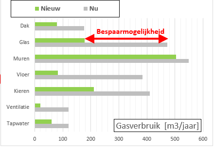
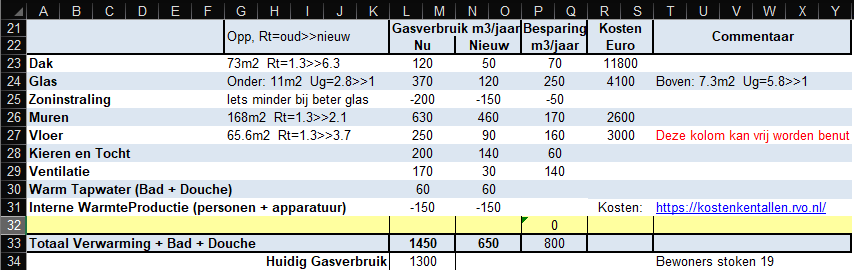
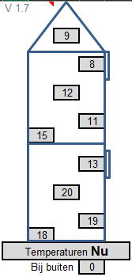
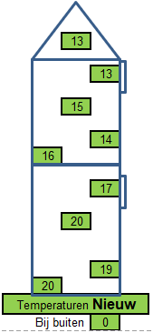

zondag 27 april 2025
22:36
En dit is een van de belangrijkste resultaten dat je er uitkrijgt.
In deze grafiek staat het jaarlijks gasverbruik van ieder specifiek gevel-element.
De grijze balken geven het gasverbruik in de huidige situatie (dus originele bouw + reeds uitgevoerde maatregelen),
De groene balken geven het gasverbruik als de beste (realistische) isolatiemaatregel wordt getroffen.
We zien direct dat in deze woning het meeste te besparen valt door de vloer te isoleren, met op de tweede plaats glas en kieren. (btw als je naar kosten/baten kijkt, moet je natuurlijk kieren als eerste aanpakken)

Ben je meer in getallen en details geïnteresseerd, dan kun je de meest belangrijke gegevens terugvinden in onderstaande tabel. Vanaf versie 3.0 kan de tekst in de kolom Commentaar gewijzigd worden en kan er 1 aanvullende regel (de gele) worden toegevoegd, omdat bijvoorbeeld een aanbouw apart is berekend.
De kosten kolom is een inschatting, die we momenteel in onze omgeving aan het toetsen zijn, zommige lijken goed te kloppen andere worden behoorlijk onderschat. De kosten zijn inclusief BTW, maar exclusief eventuele subsidie omdat daar de mogelijke verdubbeling een rol speelt.

Wat je er ook uitkrijgt, zijn de ruimte en oppervlakte temperaturen (deze zijn met name belangrijk voor het comfort gevoel). Zo kun je bijvoorbeeld goed laten zien wat het effect van betere beglazing is. Maar ook het effect van vloerisolatie is niet gering !! Voor beide effecten geldt, het bespaart niet alleen energie, maar beide maatregelen verhogen ook aanzienlijk het comfort (waardoor de gemiddelde temperatuur nog lager kan en waardoor …
|
Temperatuur Zolder
Temperatuur Ramen
Temperatuur Boven
Temperatuur Muren
Temperatuur Vloer
Temperatuur Ramen
Temperatuur Beneden
Temperatuur Muren
Temperatuur Vloer |  |  |
Inzicht WarmteLek Woningen.